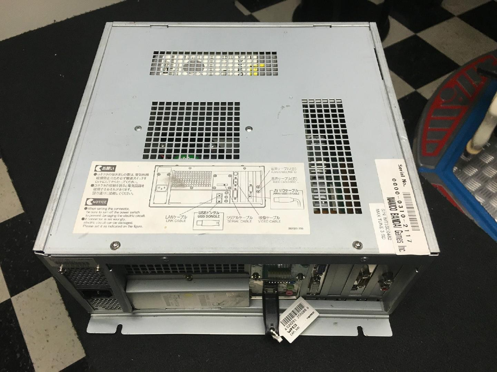

Namco PCB Documentation
System N2
(current)
System ES1
System ES3
System BNA1

Namco System N2
Specifications (Japan/Asia)
CPU
: AMD Mobile Athlon XP 2800+ (A/462)
GPU
: NVIDIA GeForce 7600 GS
Video Output
: 1 DVI, 1 VGA, 1 S-Video
Storage
: Seagate 80GB
Operating System
: Debian Linux x86 (Linux 2.6 kernel based)
Audio
: RCA AUX output with external AMP PCB (
Stereo Audio duplicated to rear speakers by amp
)
Security:
: HASP HL Max/RTC USB dongle (
v0.06
)
Specifications (Export)
CPU
: AMD Athlon 64 3500+ (939)
GPU
: NVIDIA GeForce 7600 GS (7800 GS upgradable in some games)
Video Output
: 1 DVI, 1 VGA, 1 S-Video
Storage
: WD 80GB
Operating System
: Debian Linux x86 (Linux 2.6 kernel based)
Audio
: RCA AUX output with external AMP PCB (
Stereo Audio duplicated to rear speakers by amp
)
Security:
: HASP HL Max/RTC USB dongle (
v0.06
)
Arcade Games running N2
Wangan Midnight Maximum Tune 3 (
v337
) / 3DX (
v363
) / 3DX+ (
v386
)